Back in the computing "iron-age",
when programmers wrote their code in machine or assembly language,
to manipulate a data element representing quarterly sales or the
velocity of a missile, you simply used the data element's
memory address, like the line shown below,
which assigns a value (stored in the CPU's AX register)
to the memory location A42C:
 When high-level languages, like FORTRAN and COBOL were developed,
they made things much easier, because now programmers could
use names for the data elements inside their programs;
when the programmer wrote something like this:
When high-level languages, like FORTRAN and COBOL were developed,
they made things much easier, because now programmers could
use names for the data elements inside their programs;
when the programmer wrote something like this:
int velocity = 125;
there was no more need to keep track of exactly where the
value 125 was stored in memory; the high-level language
compiler took care of the minutia of associating the memory
address A42C (or, whatever) with the variable
named velocity.
Even better, though was the fact that the compiler could now
keep track of what kind of thing you stored in the memory
location A42C and warn you if you made a mistake.
Just like 7-11 has different kinds of containers for each of
their beverages, programmers now had different kinds of variables
for different kinds of data.
With high-level languages, variables were no longer just chunks
of arbitrary bits; each variable now had a specific
data type, like char, boolean,
int or double.
User-Defined Types
Each high-level language, from FORTRAN and COBOL in the 1950s, to Java and C++ today comes equipped with a pre-defined, built-in set of data types. In Java, these are the primitive types you met early in the text.
However, programmers soon discovered that they wanted more.
Financial programmers wanted real numbers, scientific programmers
couldn't live without imaginary numbers. Business programmers
wanted dates and times, while graphics programmers really
needed points and shapes.
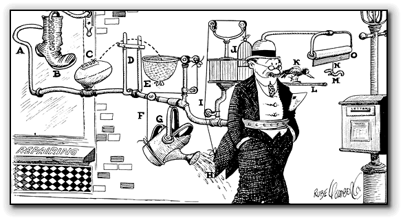
Rather than adding all of these extensions as built-in types, creating complex, "Rube-Goldberg-like languages", designers found it better to give programmers the ability to define their own types. That's really at the heart of modern, object-oriented programming, and that's what you'll learn how to do in this chapter.
But first, a little review!
What are Classes?
Object-oriented programs are collections of cooperating objects, but what, exactly, are classes? Although often confused, the difference between classes and objects is simple:
A class represents the definition—the blueprint if you like—that is used to construct an object.
Objects are created (or instantiated) when your program runs, by following the definition specified in a particular class. A class defines the characteristics of each individual object, and each class can be used to produce many objects.
The blueprint
shown here, for instance is used to define the characteristics
of a particular automobile. The same blueprint can be used
to produce any number of individual cars:
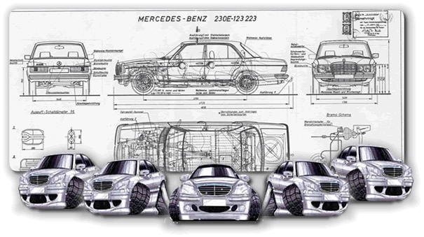
In object-oriented programs, classes represent a concept that is similar to the concept of a user-defined data type in other languages. In languages like BASIC, Pascal, and C, you can combine individual related variables into a package, (called a record or a struct), and then treat that package as in individual unit. A record might store the information for a customer in a hospital application, or for a student in a program used to run a school.Attributes and Behavior
 Classes, though, are different than the structures
and records or these earlier languages. Like a record, a class
describes the attributes of an object: the kinds
of data it stores internally.
If you were designing a Car class, for instance, as shown
in the clip to the right, you'd need to specify the physical
attributes that make up each car: its serial number, body type,
color, type of interior, engine size, and so on.
Classes, though, are different than the structures
and records or these earlier languages. Like a record, a class
describes the attributes of an object: the kinds
of data it stores internally.
If you were designing a Car class, for instance, as shown
in the clip to the right, you'd need to specify the physical
attributes that make up each car: its serial number, body type,
color, type of interior, engine size, and so on.
Unlike a structure, though, a class also describes the behaviors of its objects: the kinds of operations that each object in the class can perform. When you define a class, you need to specify what the object can do, providing an explicit list of its possible behaviors. The small car shown here can start, stop, turn, and go in forward or reverse.
Fields and Methods
As you begin writing Java programs, you'll find that classes are very important. In fact, every Java program you write is a class definition. In your class definitions you describe the attributes that each of your objects possesses, and define the methods that each uses to carry out its actions.
To store the attributes of an object, you use instance variables—the data objects that you define to store an object's state. In Java, instance variables are also called fields. To specify the behavior for your classes, you write methods.
Hands-On: Creating Your Own Class
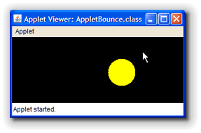
Enough theory! Let's look at an example! In this section and the next, we'll return to the bouncing ball program, AppletBounce from earlier in the text.We'll write several different versions of the application, gradually turning it into an object-oriented program that applies the principle of encapsulation.
By writing several different versions, you'll come to appreciate why encapsulation is needed, and how it can make your programs simpler and more robust.
The Original AppletBounce
The AppletBounce program was introduced in Section
8.4—Introducing Animation. I've placed a copy in this
chapter's code folder. Go ahead and open it in DrJava, and note that
the program extends the Animator
class and then basically does three things:
- It defines three instance variables: a
Rectanglewhich we use to represent our ball, and two integers to represent the horizontal and vertical movement of the rectangle during each animation frame.

- The variables are initialized in the
applet's
init()method:
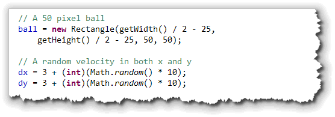
The applet foreground is set to yellow so that we dodn't need to keep track of the ball color separately. (If we had wanted to draw a red ball as well, we would have needed more code.) - Inside the
advanceOneFrame()method, the rectangle is moved (using thetranslate()method) and then drawn on the screen, using theGraphics fillOval()method. After drawing the image, the location of the rectangle is
checked against the applet's bounding rectangle, and, if it
has bounced "out of bounds", the horizontal and/or vertical
movement fields are adjusted:
After drawing the image, the location of the rectangle is
checked against the applet's bounding rectangle, and, if it
has bounced "out of bounds", the horizontal and/or vertical
movement fields are adjusted:

The SimpleBall Class
For the first sequel to AppletBounce, instead of using a
Rectangle and separate fields or local variables
for the attributes of our bouncing ball, let's
create a class to represent our ball.
To keep confusion to a minimum, let's start with the simplest class definition possible: in fact, let's call it SimpleBall. We'll start with the first part of the class definition: defining instance variables of fields to store the object's state.
The Class "Skeleton"
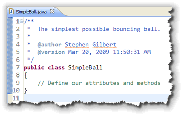
Just like we have a "skeleton" for the methods you write, there is also a skeleton for a simple, user-defined type.
To start, just use DrJava to create the SimpleBall class exactly like you create a regular Java program or applet, except:
- the class does not
extendanything! - it does not contain a
run(),paint(), ormain()method.
To the right is the basic code for the SimpleBall
class. As you can see, I've added a class comment to the top
of your file. When you're asked to write your own classes on
the final programming exam, you'll need to do that to get
all of the possible style points.
Data Attributes
To define the fields for your class, you have to decide what data elements you'll need to represent objects of the class. If were were defining a Car class, like the illustration shown earlier, we might want to have fields for Serial Number, Color, Engine Size and Body Style.
In our case, we could use a java.awt.Rectangle,
like the original AppletBounce program did. One of the
advantages of object-oriented programming, though, is that it lets
you think in more "natural" terms. Rather than thinking in
terms of rectangles, let's model our ball using:
- radius: how big the ball is.
- location: where the ball is located.
- dx,dy: the velocity of the ball.
- color: the color used to paint the ball.
This doesn't look that much different than the previous example, of course; but there's one major difference:
The data elements are packaged now packaged inside our class, not "lying loose" inside our program.
Defining Fields
You've already worked a little with instance variables,
so the syntax for creating them should be familiar; it's exactly
the same as that used for local variables:
except that
- it is defined inside the class body, but outside of any method, and
- some of the modifiers that appear before an instance variable are different than those that can appear before a local variable.
As I mentioned before, normally we'll use the modifier
private in front of every instance variable. For
the SimpleBall class, though, I'm going to use the
modifier public instead. This is just a learning
exercise though; don't do this with the real classes that
you develop.
Here's the SimpleBall class with each of these fields
defined:
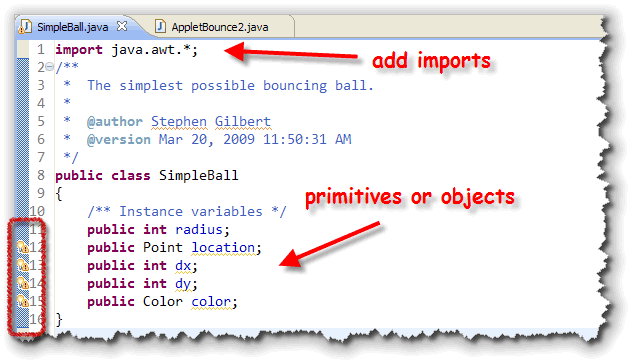
Notice that:- The fields themselves can be primitive types like
int, or they can be reference types likePointandColor - When you use a class type, you must include the
importstatement for the class, just like I've done withjava.awthere, so I can use thePointandColorclasses when defining my fields.
Javadoc
Because each of the fields we've defined is public,
users of the SimpleBall class will be able to
directly access the fields. Any time you have a public member
(whether a field or a method), you should add a Javadoc comment,
so users will know what the public element does:
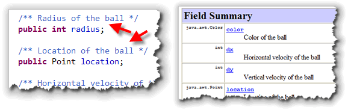
Once you've done this, the description will appear in the Javadoc documentation that you can generate for your users by just clicking the Javadoc button in DrJava. When you do this (as long as you have the JDK installed), DrJava will generate documentation for all of the files open in the Files pane.AppletBounce2: Using SimpleBall
To test your new class, you need to write a program that uses the class. Do that by saving AppletBounce as AppletBounce2 and then changing the class name. You should be able to compile it and run it just like the original.
Now, let's make the changes so that
your program uses the SimpleBall
class instead of the Rectangle class and
int variables.
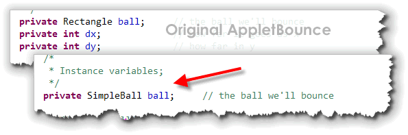
Instead of fields fordx and dy, those
are packaged up inside the SimpleBall class.
Instantiation
To initialize the applet's SimpleBall field,
we first need to create a SimpleBall
object. You do that by using a constructor along with
the new operator, just like any of the classes
you've worked with up to this point:
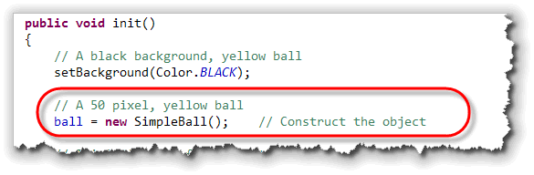
Notice that since color is now a data attribute inside theSimpleBall class, we no longer need to set the
applet's foreground color to yellow.
Those of you who already know a little object-oriented
programming might wonder how we can create a SimpleBall
object without first defining a constructor for the class.
The answer is simple: if you don't define a constructor for your
class, then Java will write the "no-argument" (default) constructor
for you. This no-argument constructor doesn't initialize any of
the fields, but does create the object in memory.
Initialization
Now we've created an object to go along with the ball
field, we still need to initialize the fields inside that object.
This code also appears inside the applet's init()
method:
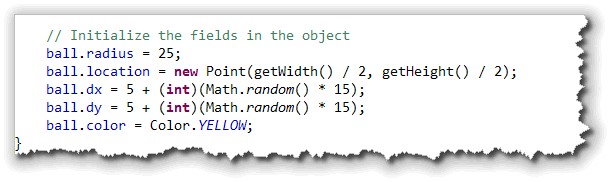
Here's what the initialization code does:- To get a ball that's 50-pixels wide, we need to
set the
radiusfield to 25. Note the syntax for accessing apublicfield: it is very similar to calling a method:
- Since the
locationfiled is aPointobject, we need to create a newPointwhen we assign it. - The
dxanddyfields are initialized just as they were in the original AppletBounce, except that now they are inside theSimpleBallfield. - Finally, we can set the
colorfield by assigning one of the constants from theColorclass.
Although I haven't shown it in the screenshot here, make sure
you leave the line that sets the frame rate at the end
of the init() method. Otherwise, your new ball
won't bounce around the screen at all.
Painting Each Frame
The advanceOneFrame() method for AppletBounce2 is
almost the same as the original version; there are really
only three main differences:
- Instead of accessing the applet instance variables,
such as
dxanddy, the code needs to access the fields inside of the ball. - Instead of relying on the default applet foreground color when painting, the new version extracts the ball color before drawing the ball on the screen.
- When using
fillOval()to paint the image of the bouncing ball on the screen, the calculation is slightly different than the one you used previously. With aRectangle, the origin of the ball was in the upper-left corner. With our home-grownSimpleBallclass, the origin (point 0,0) is in the center of the ball. This is also true for the calculations used in the edge-collision.
Here's what the new code looks like:
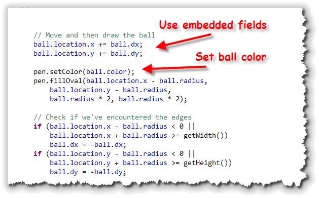
Notice how:ball.dxandball.dyis used in place of an unadorneddxanddyin the original.- When an object's fields are, themselves, objects, you need to use several "dots" to "drill-down" to the embedded value you are interested in.
This last point can be seen by examining the ball's
location field. Since this is a Point
field, and Point class objects contain x
and y fields, we need to use two dots: one
between the variable (ball) and the field name
(location), and then another between location
and its field x (or y).
Try It Yourself
To see if you've created the SimpleBall class correctly, complete, compile and run AppletBounce2. Then, change the ball's color and size, and run it again and make sure it works.

Defining Fields Summary
- Assembly language programmers referred to the data elements used in their programs using addresses. High-level languages provided the ability to attach a name to the data element and to restrict it's contents to a particular type.
- Later high-level languages gave programmers the ability to create their own user-defined data types. Object-oriented language extend this idea by allowing programmers to specify exactly what operations should be allowed on the new types.
- Classes are the blueprint for a user-defined type. The class describes what attributes (data elements) each member of the class will have as well as the behaviors members of the class can perform.
- Objects are individual instances of your user-defined type, created as your program runs by following the blueprint supplied in the class definition.
- Data attributes are defined by creating instance variables or fields that will hold the state of each object. These fields are initialized by using a constructor.
- The behavior of each class is specified by defining methods that make up each object's behavior.
- To define a field specify its type and name. Place
the field definition outside of any method. Normally
you'll use the
privateaccess modifier but for this first example, we've usedpublic. - To access the value of a
publicfield, you use the object-dot-name syntax to refer to the variable:myBall.dx = 35;